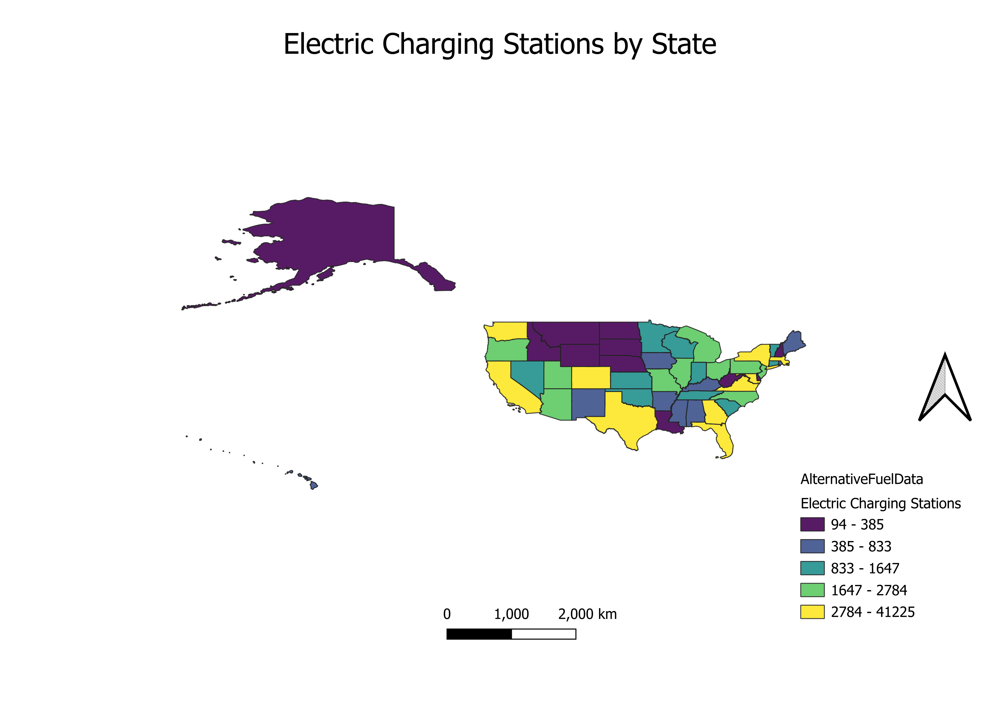

Homework 7: Make a chloropleth or proportional symbol map
Nicholas Pell
The map I have put together displays the distribution of electric vehicle charging stations throughout the United States. The data is separated into five quantiles with an equal number of states in each. I chose this dataset as I am interested in how states compare in the electric transport transition and if population or regional differences may play a role. The map does show that states with higher populations have more chargers. There is also a distrint region of the Northwest which groups almost all of the lowest states together.

Data used for this project
CSV dataset
Link to shapefile
Agency Website